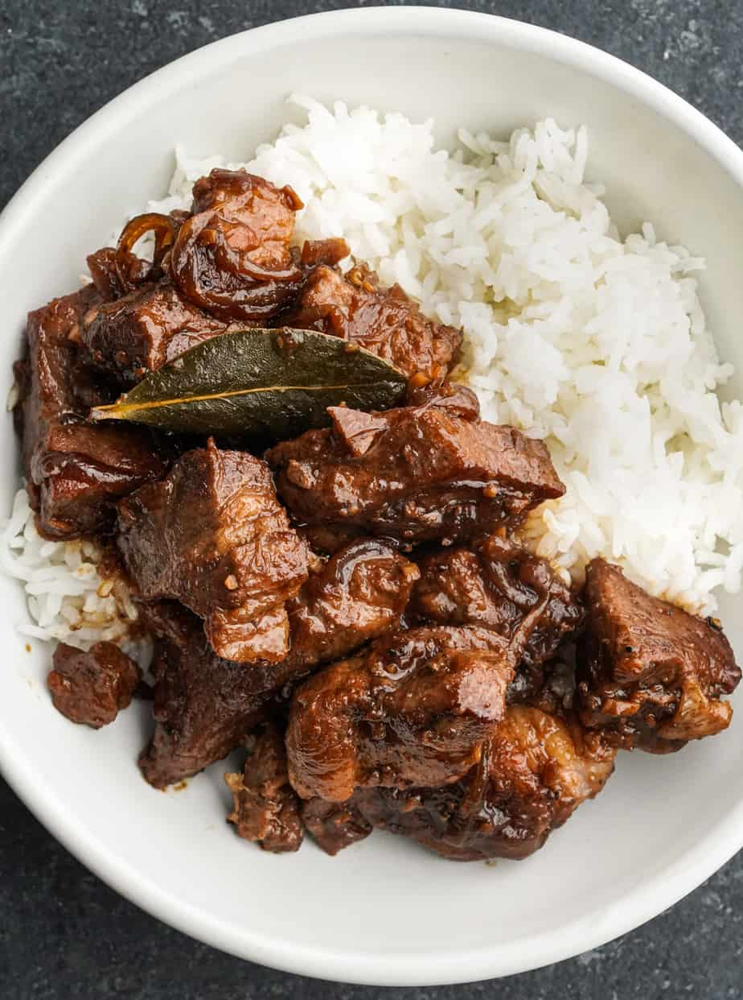

Meat Adobo

Description
Adobo is a versatile and tasty dish that can be used to make any meat into a delicious meal. Its super simple to execute, and takes very few ingredients.
Ingredients
- Meat of your choice
- Soy Sauce
- Water
- Garlic
- Vinegar
Directions
- Mince the garlic
- Dump all the ingredients in a pot and bring it to a boil
- As it fully reduced, keep refilling with more water until its at desired doneness
- When its of a desired doneness, let it reduce to a glaze